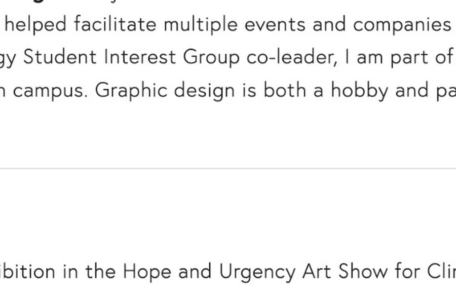
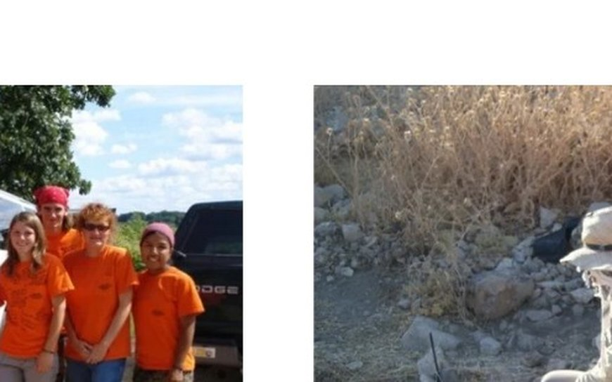

Responsible AI
Methods to identify and mitigate risks in sustainability-focused generative AI systems. This includes decision-oriented approaches to testing, evaluating, and mitigating risks in enterprise sustainability applications.
My work focuses on the decisions that shape the environmental footprint of AI, digital products, and global technology supply chains.
Methods to identify and mitigate risks in sustainability-focused generative AI systems. This includes decision-oriented approaches to testing, evaluating, and mitigating risks in enterprise sustainability applications.

Frameworks for connecting digital behavior with infrastructure, resource use, and climate impacts. Understanding how everyday digital activity relates to production systems and emissions.

Life cycle assessment for electronics, semiconductors, circularity, and supply-chain decarbonization. User-centered methods for comparing multifunctional technology products.
A decision-oriented approach to testing, evaluating, and mitigating risks in enterprise sustainability applications.
A framework connecting everyday digital activity with production systems, resource use, and emissions.
A user-centered method for comparing multifunctional technology products based on the services they provide.

